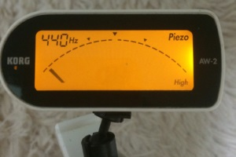
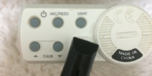
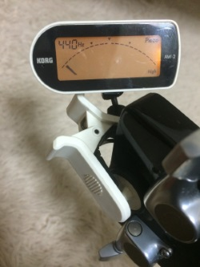
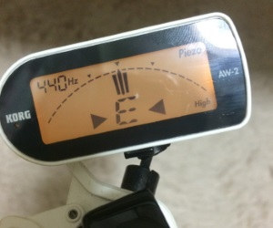

鹵ここはゆずっこ軽音部です！鹵
ゆずに憧れてギターを始めてみたい！
だけど周りにゆずっこ友達や楽器について教えてもらえる人もいないし、いきなり楽器屋さんに行って店員さんに話しかけるのも緊張しちゃうって人たちの助けに少しでもなれればと思っています。
僕も周りに教えてくれる人もいなかったので完全に独学で、わからないことだらけでした！なので初心者の皆さんの気持ちがすごくわかります！
だから、そんな人たちの助けになれたらとこのサイトを立ち上げたわけです！
初めてのギターに出逢ってそのギターを弾いて楽しいギターライフをエンジョイしている自分を想像しながら、項目ごとに見ていきましょう！
かなりゆずっこに向けてゆずっこ寄りに書いています(笑)
※あくまでも一個人の考えですので異論のある方もいるでしょうが、参考としてお考え下さい。
※随時更新していきたいと思いますのでご意見やご要望はTwitterの方へお願いします。
※項目をクリックすると詳細が出てきてもう１度クリックすると折りたたまれます。
まずはどんなギターが欲しいか考えてみよう！その1
-
ギター選びに重要なのはボディの大きさ、弾きやすさ、ネックの握り具合、などなど人によって色々あるとは思います。
ボディが大きくて弾きにくくてやめたとか、指が届かなくてやめたとかよく聞くんですけど、そんなのはうまく出来ないただの言い訳だと思うんですよね？？
指が届かないなら毎日お風呂上りに指のストレッチして開くようにすれば良いわけですし、そもそもいきなり出来る人なんていないんです。
サイズにしてもmiwaちゃんなんかは、あの小さな体でYAMAHAのLLの自分の体より大きいボディのギターを使って全国の人を萌えさせてるわけですからね(笑)
結局はボディサイズも"慣れ"なんです。
で、何が言いたいかと申しますと、ここはなんせゆずっこのサイトなのでゆずのギターに似ている見た目で選んじゃおうよ！ってことです！(笑)
それにゆずのギターは有名メーカーのものでそのコピーモデルも有名所が出してるんでハズレはないです！次の項目でメーカーやモデルを紹介します。
いくら弾きやすいギターを選んでも見た目が自分の好みじゃなかったら練習しようってやる気がまず出て来ませんよね。
鏡に向かってギターを抱えて"自分なんだかカッコいい！"って思うことや、"ゆずみたい！"って思うことでやる気がでて練習に繋がるものです！ まずはどんなギターが欲しいか考えてみよう！その2
-
で、ようやく本題に入るんですがここはゆずっこのサイトなのでゆず基準で考えたいと思います！
まず、
ゆずのふたりどっちが好きか？？
ここがはっきりすることでおのずとメーカーも絞られてきます。
北川さん派ならいきなりGibsonは無理でもEpiphoneの廉価版にすればいいでしょう。
EJ-160EかEJ-45この辺りがいいかな、と。
この２機種なら見た目は北川さんのギターにそっくりです！
あとはK.YAIRIのJY-45も見た目は似ていますが、やはり北川さんのギターは世界のギブソン、そのコピーモデルとなると結構なお値段はしてきますね。
岩沢さんが好きなら間違いなくYAMAHAです！岩沢さんがデビュー当時使っていたギターは何の変哲もない当時みんなが買える普通のモデルだったんですよ!
実は北川さんもYAMAHA使ってますしね！YAMAHAの事なら語れます(笑)
まず岩沢さんの白と言われているギターに見た目がそっくりなギターは、
FG-512SJ これのエレアコ版 FGX-512SJ があります。
しかしこれらはすでに生産終了品であり、オークションや中古で手に入れるしかありません。
新品で音も見た目も白にそっくりなのが、値段が跳ね上がるのですがTheFGです！
このギターは岩沢さんのFG-Customがモデルになっていると言われており、いわば岩沢厚治モデルという事になります！
ペグを変えてしまえば岩沢FGサウンドの出来上がりです！音が良くて弾きやすいホントにいいギターです！
そして岩沢さんの黒２にそっくりなギターが、
FG-522SJ BL
になります。
しかしこれも生産終了品でこのギターは岩沢さんの影響かホントに大人気でオークションでも１年に１回出るか出ないかくらいの人気ぶりです。
では、見た目が少し変わってしまいますが現行品で考えてみましょう。
調べてみたら新しいモデルが出るみたいですね！
FG-820
これスペック見る限りかなりいいです！エントリーモデルでマホガニー採用するなんてYAMAHAの本気を感じます(笑)
もう少しお予算出せるなら、LLシリーズのサンバーストカラーが北川さんのDOKI宗に似ています。厳密には色味が違うのですが雰囲気は出ています。
LL-6 ARE
LL-16 ARE
この辺のモデルなんかいいですね！
まあ、新品でLL16買うなら中古のTheFGを推しますが(笑) ちゃんとした楽器屋さんに置いてある中古のTheFGならメンテもしてあるはずですからね。
ひとつ避けてほしいのは、その楽器屋さんのオリジナルメーカーの物で２万円弱くらいの初心者○点セット！みたいなものです。
おそらく店員さんはガン推ししてくると思うんですがその甘い言葉には乗らず有名メーカーの物を選んでおけば間違いないです！
最後にまとめると、
北川さん推しなら、EpiphoneのEJ-160EかEJ-45、K.YAIRIのJY-45、YAMAHAのLL-6、この辺のモデルを調べてみてください。
岩沢さん推しなら、YAMAHA FG-820、TheFGこの辺りのモデルですね。
けんぼはTheFG推しです！ホントにいいギターなので間違いなく一生物のギターです！最初のギターが一生物のギターなんて素敵じゃないですか？？(笑)
あえて最初に高いもの買って逃げ場をなくすっていうのもひとつの手ですね(笑)
ぜひ参考にしてください！
左利き用のギターについて・・・個人的には左用は数も少なくなんだかんだ割高になってしまいます。
それに他の楽器でもそうですが初めてやることに右利きも左利きもあんまり関係ないですよね。相当なこだわりが無ければ普通に右利き用で十分だと思っています。 ギターと一緒に購入したいもの
-
さて、ギターは選ぶことが出来ました！
今回はギターと一緒に購入しておきたい物編です！
とりあえずいくつか挙げてみますと、
・チューナー KORG AW-2G
・ギタースタンド お好きなもの
・カポタスト SHUBB C-1
・ピック数枚 お好きなもの
・弦 お好きなもの
・クロス(楽器を拭くための布)
・ゆず全曲集 FURUSATOまで
こんなところでしょうか？？
なるべくゆずのふたりが使っている物を選んでみました！
他には弦交換の時にニッパーがあればいいんですが楽器用は高いので家にニッパーがあればそれを、なければ金属用の先が細いものをホームセンターなどで揃えると良いと思います。楽器用のが良いって方は全然楽器屋さんで買うのもありです。
弦も種類がたくさんあって困りますよね。一応自分のおすすめはエリクサーのコーティング弦です。これは以前ゆずも使っていると紹介していましたしなによりコーティング弦なので寿命が長い！
しかし初心者のうちは慣れるまで弦交換の時やチューニング時に弦を切ってしまうこともしばしばなので、３セット1,000円くらいの安いもので弦交換に慣れましょう。
慣れたらエリクサーなどのコーティング弦を張ってみてください。明らかに音が変わるし、すべすべで弾きやすくなります。なにより長持ち！←これです(笑)
後は立って演奏するときのためにストラップも必要ですね。しかし座って弾くのと違って立って弾いてみると急に難易度が上がるので今すぐ必要ではないと思います(笑)
ちなみに岩沢さんが使っているギターストラップは現在生産していないので買えませんが、北川さん使用の物なら買えるので紹介しておきます。
LiveLine製のLA2800やLA3000です。北川さんは3色とも使用しているので使うギターに合うような色を選んでください。
革製品ですので初めは硬いですが使っていくうちに柔らかくなって味が出てきます。
ゆず全曲集はなぜ最新のものではなくFURUSATOまでなのかというと、新しいものはどうやら歌詞譜しか載ってないらしく、コード譜の記載がないので初心者には不向きかなと判断したためです。 チューニングしてみよう！
-
さあ！いよいよギターをお家に連れて帰ってきました。とりあえず少し眺めてみたり、磨いてみたり、添い寝してみたり、それぞれ楽しんだ後はいよいよ弾いてみましょう！
わくわくしますねー、でもその前に楽器はチューニングをしなければなりません。
ここでは、チューニングについて解説します。
チューナーは、AW-2を基準に説明しますね。
まずは、本体の電源を入れて左上が440HZ、右上がPiezoになっていることを確認してください。

なっていなければ裏にあるボタンで調整します。

LIGHTで液晶の明るさ、MIC/PIEZOボタンでMicとPiezoを切り替えられて、その下のCALIBの上下でHZを調整できます。
出来たらギターのヘッドにかぽっと取り付けます。
ディスプレイは見やすい角度でこんな感じで↓

まず、
Ｃ Ｄ Ｅ Ｆ Ｇ Ａ Ｂ
↓
ド レ ミ ファ ソ ラ シ
に対応している事を覚えましょう。
アコースティックギターは６本の弦が張ってあります。
太い方から６弦、５弦、４弦、３弦、２弦、１弦です。
合わせる音は、
６弦 = Ｅ = ミ
５弦 = Ａ = ラ
４弦 = Ｄ = レ
３弦 = Ｇ = ソ
２弦 = Ｂ = シ
１弦 = Ｅ = ミ
覚え方としては６弦から、
ＥＡＤＧＢＥ
↓
ミラレソシミ
↓
みられそシミ
↓
見られそうシミ!
で覚えましょう!見られたくないですよね～(笑) でも覚えやすいですよね(^^)
では合わせていきます！こんな感じで針が真ん中に来るように合わせましょう！これは６弦のＥです。
 いよいよ音を出してみよう！コード編
-
さあ！チューニングも終わりました！いよいよ音を出してみましょう！
と、いっても何をしていいかまったくわかりませんよね(笑)
僕もそうでした！
最初の頃はいろんな雑誌を読んで練習法を調べていたんですが、どれをやっても全く面白くない！(笑) タブ譜の見方なんかは勉強になりましたが。
結局は自分が好きな曲を練習するのが一番だと思います！
そう、ゆずっこならゆず全曲集が立派な教科書なんです！曲を弾いているうちによく出てくるコードは覚えちゃうんで弾ける曲がいっぱい増えてどんどん楽しくなってきます！
ここではリットーミュージックから出ているゆず全曲集で解説していきます。
まず、タブ譜の見方からいきましょう！
この楽譜は、一番上が歌やハーモニカなどのメロディーラインが書いてあって、真ん中にギターのストローク(弦を鳴らす手の動き)、その下に押さえるコードが載っています。
一番下のコードが書いてあるTABの部分は、抱えているギターをそのまま横に寝かせて上からみた指板を表しています。
縦の線がギターのフレットを表していて、左側の太い縦線がギターの一番左端を意味しています。
例えばシュビドゥバーの楽譜を見てください。
ハーモニカから始まって、最初のコードはＣになっています。
TABに書いてある●の所を押さえてください。とりあえず◯と×は無視して大丈夫です。
左から、人差し指は２弦の１フレット目、中指が４弦２フレット目、薬指で５弦の３フレット目を押さえてジャラーンと弾きます。それがＣコードです！
この時、なるべく指を立ててフレットの近くを押さえると少ない力で奇麗な音が出やすいです。
ほら！もうひとつコードが弾けましたね！これだけでかなり嬉しかったです(笑)
こうやってコードをいっぱい弾いて覚えていきましょう！ 音を出してみよう！ストローク編８ビートの巻！
-
さて、コードの見方はわかりましたがストロークの所の見方はさっぱりわかりませんね(笑)ここは文章で伝えるのは大変難しいです。
ピアノをやってる方ならわかると思うんですが、ここには音程がないリズムだけの音符が書いてあるんです。音楽の授業をまじめに受けていた方ならすぐに音の長さを表しているとわかると思います(笑)僕はわかりませんでした(笑)
このリズムにはパターンがあって４，５種類ほど覚えるとゆずの曲はかなり弾けるようになると思います。
まずは、サヨナラバスや友達の唄、また会える日まで、シュビドゥバーなどで使われている8ビートを練習してみましょう！
８ビートの８は８分音符のことで、８分音符を基本単位としたビートが８ビートです。
４分の４拍子で８ビートのストロークを矢印で表すと、
↓↑↓↑↓↑↓↑
こんな感じです。
↓がダウンストローク、↑がアップストロークです。
弾いてみると、
ジャカジャカジャカジャカ
"ジャ"がダウンストローク、"カ"がアップストロークです。
４カウント取る間に、"ジャカ"のセットが４つ入ります。
では先ほどのＣを押さえて
曲っぽく弾いてみましょう！
ストロークパターンはこんな感じです。
↓(↑)↓↑(↓)↑↓↑
こんな感じで、（）の所は弾きません。
↓ ↓↑ ↑↓↑
見やすくするとこんな感じです。
ジャン ジャカーカジャカ
みたいな感じです！わかりませんよね(笑)
音を記事だけで説明するのは難しいので、思い切って動画をあげてみようと思います。ハーモニカが下手なのは仕様です(汗)
※動画と記事の製作が前後しているので、動画内の"ジャ"と"カ"の使い方が若干違います。 音を出してみよう！ストローク編４ビートの巻！
-
では、次は４ビートを練習してみましょう！
４ビートは４つ打ちのゆっくりめなリズムなので比較的弾きやすいと思います！
矢印で表すと、
↓(↑↓↑)↓(↑)↓↑
()の中は弾きません。
ジャーン ジャンジャカ
こんな感じです！簡単ですね！
音を出してみよう！ストローク編３拍子の巻！
-
次は３拍子を弾いてみましょう！
３拍子は、１小節にジャカのセットが３個入っていて、ところでやからっぽ等に使われています。
ストロークは、
↓(↑)↓↑↓↑
ジャン ジャッカジャッカ
こんな感じです！からっぽは曲の雰囲気に合わせて少しアレンジして弾いています↓
音を出してみよう！ストローク編１６ビートの巻！
-
はい、ここではいよいよ１６ビートのストロークの練習です！
16ビートは１小節に入ってる音が８ビートの倍になります！速いです！ノリノリです！弾けるようになったらかなり楽しいですよ！
ジャカジャカ説明でいくと、
４回カウントする内にジャカが８回入ります。
ジャカ ジャカ ジャカ ジャカ ジャカ ジャカ ジャカ ジャカ
↓↑↓↑↓↑↓↑ ↓↑↓↑↓↑↓↑
３カウントなどで使用されている代表的な１６ビートのストロークがこちらです！
↓(↑↓↑)↓(↑)↓↑ (↓)↑↓(↑)↓(↑)↓↑
例のように（）内は弾きません。
はい、もうわけわからんですね（笑）
そして飛べない鳥などに使われている、これを応用したものが
↓(↑↓)↑↓↑↓(↑ ↓)↑↓↑↓(↑)↓↑
こうなります。
今はわからなくてもいいです！これを踏まえて動画を見て、そしてまた読んでみてください！
これがスムーズに弾ける頃にはもう初心者とは言えないくらい上達していますよ！
結局最初はどんな曲練習すればいいの？？
-
ここでは初心者の方が弾きやすそうなゆずの曲をストローク別に選んでみました！
３拍子
・ところで
この曲は初心者おすすめ曲でよく紹介されている曲ですね。理由としては、ズバリ！バレーコードが出て来ないんです！
バレーコードは、人差し指を寝かせて全部の弦をいっぺんに押さえるＦやＢｍ等の初心者に立ちはだかる最初の鬼門のコードです。この曲はその鬼門が出て来ないのでおすすめの曲として有名なんですね。
・からっぽ
この曲はテンポもゆっくりなので比較的弾きやすいと思います！
ただ初心者の鬼門、Ｆコードが出てくるんですがカポを５フレットに付けて弾く曲なので比較的押さえやすくて音も出やすいと思います。
４ビート
・いつか
冬の名曲ですね！テンポも速くなく弾きやすいと思います。
カポ２だからＦも押さえやすいとは思います！ＦとＦｍが鬼門ですね。
・栄光の架橋
イントロ、アウトロは置いといて(笑)
この曲も初心者に弾きやすい曲だと思います。Ｆを突破できればですが(笑)
やっぱりバレーコードはどんな曲にも付きまとってくるので早い段階で突破しとくほうが良いです。
逆に弾けるようになってさえしまえば、どんな曲でも弾けちゃうんですからね(笑)
・おじや
この曲も弾きやすいですね！弾きやすくて良い曲です！素敵です！(笑)
８ビート
・連呼
この曲もバレーコードなしで弾ける貴重な曲です！途中で出てくる３連符に気を付けましょう！
・地下街
この曲も良いです！適度にバレーコードが出てきてバレーコードの特訓に持ってこいですね！個人的におすすめします！
・贈る詩
けんぼの周りにはなぜかこの曲を最初の課題曲にしている人が多かったです(笑)
"たった一つの贈り物" ってフレーズの所でちょうどＣｍが出てくるんですけど、そこでつまづいてちゃんと贈れてない人がたくさんいました(笑)
皆さんも練習して贈り物ちゃんと贈れるように頑張りましょう(笑)
・サヨナラバス
この曲は初心者おすすめというより、バレーコードが出来始めた初心者に挑戦してほしい曲です！
この曲はＦからのＢ♭、ここにつきます。あとはなんちゃないです！いきなりイントロで出てくるんですけどそこを頑張って乗り越えられればホントに弾いてて楽しい曲ですよね(笑)
頑張りましょう！！
１６ビート
基本的に初心者には１６ビートは難易度高くておすすめはしませんがある程度弾けるようになったら挑戦してもらいたい曲を書いてみます。
・境界線
テンポがゆっくりな１６ビートなので弾きやすいと思います。境界線を越えて鳥になれるように頑張りましょう（笑）
・３カウント
この曲は１６ビートで解説した２種類のストロークパターンを使い分ける箇所が出てきます。
ある１ポイントだけで出てくるので練習になると思います。サビ前のＢコードの２小節目と、サビのＢです！
Ｂが出てきたら、あっ変則くるねって思ってもらえれば良いと思います！
そこさえ気を付ければ３カウントは弾けたも同然です！コードチェンジが出来る前提の話ですが（笑）
・飛べない鳥
こいつをスムーズに弾きこなせればもうあなたは初心者ではありません！
多くのゆずの曲を弾けるようになっていると思います！初心者の内はこの曲を目標に頑張ってみてください！
この曲は動画内で紹介した２種類のストロークをサビで使うのでかなりストロークの練習になるかと思います！
ここまで上達したあなたはもうこのサイトは必要ないのではないでしょうか？？(笑)